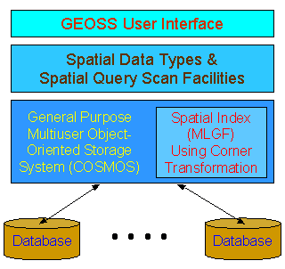

Features and Characteristics
-
Using COSMOS, a general purpose multiuser
object-storage system, as a Low Layer Storage System
-
Integrated Management of Spatial and Nonspatial Data
-
Spatial Query Scan Facilities for Various Spatial Query Processing
-
Fast Spatial Query Processing Using the Spatial Index MLGF (Multilevel
Grid File) with Corner Transformation
-
Spatial Data Types for Spatial Data Modeling

Application Areas
-
Geometric Information Systems
-
Urban Development Information Systems
-
Car Navigation Systems
|